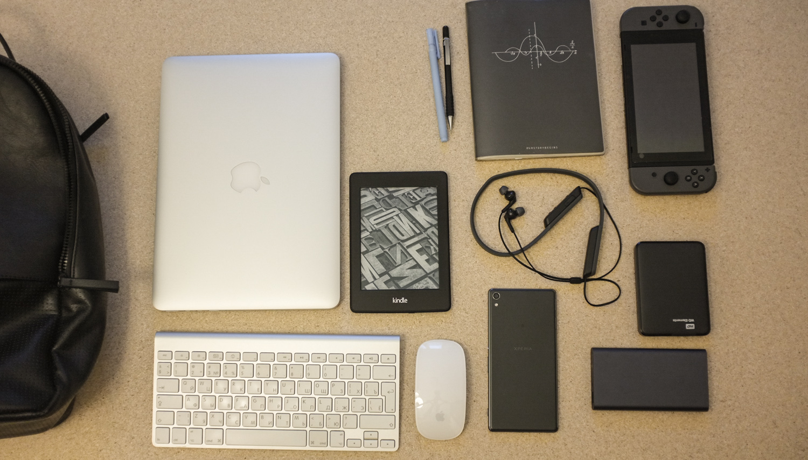
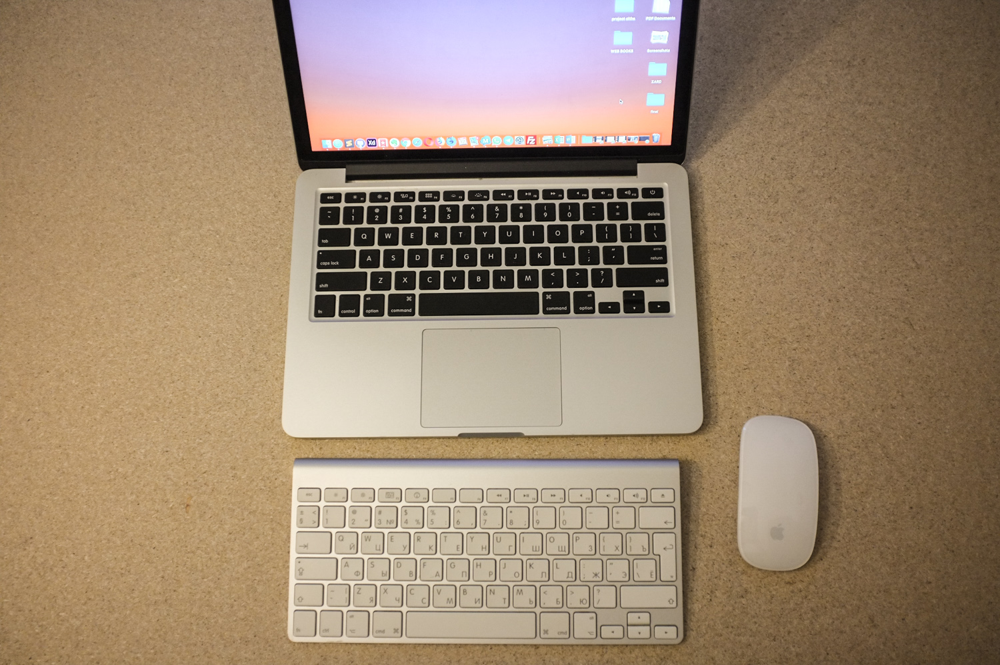
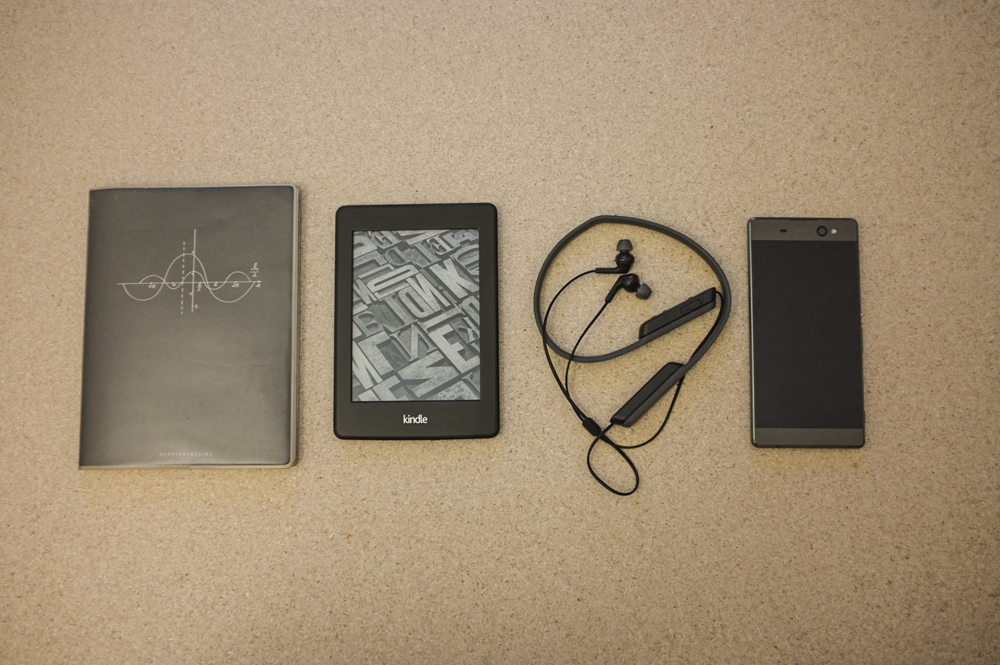
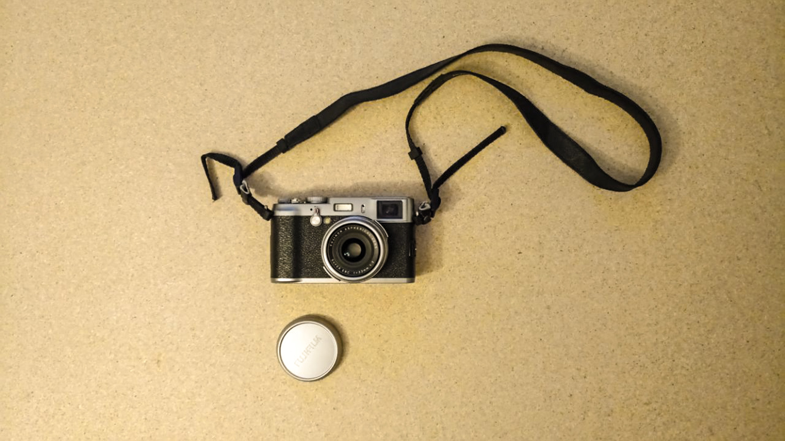

Blog
What's in My Bag
I got inspired by 'What's in Your Bag' on the Verge so I decided to do my own. So here is my stuff. Of course, I don't carry all of these every day but they are my best friends.
 MacBook Pro 13"
I bought it long time ago while being on holiday in Florida. MacOS is the greatest thing Apple has ever created. Windows would be my least choice. Nevertheless there is one thing I don't really like about my MacBook. It's too heavy. I know a new lineup of Apple laptops is much better in terms of weight.  